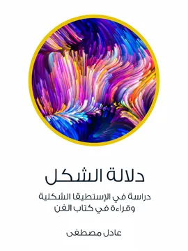

دلالة الشكل: دراسة في الإستطيقا الشكلية وقراءة في كتاب الفن

قراءة عربية أصلية محددة النطاق في الصفحات 9 إلى 14 من ملف PDF المرتبط، وليست تلخيصا كاملا للكتاب. نناقش ما تدعمه هذه المقاطع فقط.
لماذا الفن ضرورة لا ترف؟
يفتتح مصطفى دراسته بتصدير غاضب: يشملنا هذه الأيام مناخ يضع الفن في موضع دفاع وربما زج به إلى ساحات القضاء، ومرُّد ذلك إلى التباس لفظي قديم ارتبط فيه النغم بالمجون والنحت بالوثن، حتى أُلقي بالاثنين معًا إلقاء الرضيع مع ماء الغسل. ويعلن قاعدته: الفن ليس حرامًا وليس جائزًا، الفن لازم، والأمة التي تطرح للنقاش مسألة مشروعية الفن هي أمة محمومة تهذي. ويستشهد بالغزالي في الإحياء: من لم يحركه الربيع وأزهاره والعود وأوتاره فهو فاسد المزاج ليس له علاج. ثم يدخل الفصل الأول إلى قلب النظرية الشكلية: تبدأ من واقعة يقينية هي أننا ننفعل إزاء أشياء معينة نسميها أعمالًا فنية انفعالًا شديد الخصوصية نسميه الانفعال الإستطيقي. ويطرح السؤال: ما القاسم المشترك بين اللوحات والسيمفونيات والقصائد والكاتدرائيات؟ يجيب كلايف بل بجسارة وحسم: إنه الشكل الدال، أي تلك التوليفات من الخطوط والألوان التي تثير في المشاهد انفعالًا إستطيقيًا. ثم يعمم المفهوم عبر فكرة الوسيط الحسي: ألوان وخطوط في التصوير، وأحجام في النحت، وأصوات في الموسيقى، وكلمات في الشعر.
زاوية وحدود القراءة
قراءة موجزة من ص ٩ إلى ص ١٤ من أصل ١٢٢ صفحة، تعرض تصدير الطبعة الثانية وأول الفصول، لا الكتاب كاملًا.
الطبعة والقراءة
هذه النسخة من الكتاب صادرة ومتاحة مجانًا بموجب اتفاق قانوني بين مؤسسة هنداوي والسيد الدكتور عادل مصطفى.
تنزيل PDF المجاني ↓ القراءة والمصدر الرسمي ↗